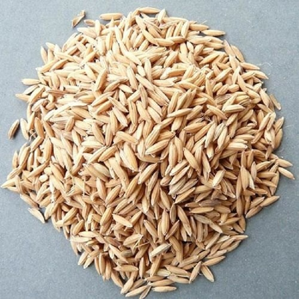

Good things
grow from
small beginnings.
Choose with care. Grow with confidence. Discover crop seeds and simple, practical guidance for the season ahead.
Seeds to start
something great.
Browse our featured crop seeds and connect with us for details, availability and choosing the right fit for your growing conditions.

GRAIN↗Rice & paddy
Explore varieties for your field and season.
 OILSEED↗
OILSEED↗Mustard
Plan your oilseed crop with the right information.
Black sesame
Find crop details and support for your needs.
FIELD NOTES
✳
More than a seed.
A better start.
Every field is different. We keep seed discovery simple, with practical crop information and a human connection when you need help making a decision.
Plan smart.
Grow steady.
Seed choice is only the beginning. Think about soil, weather, water and timing. Need a second opinion? We’re here to help you start with the right questions.
Get crop guidance ↗Let’s grow
something good.
Need seed details or help finding the right crop? Send us a note.
Contact Seedshop ↗Demo website — replace this email with your real business contact.